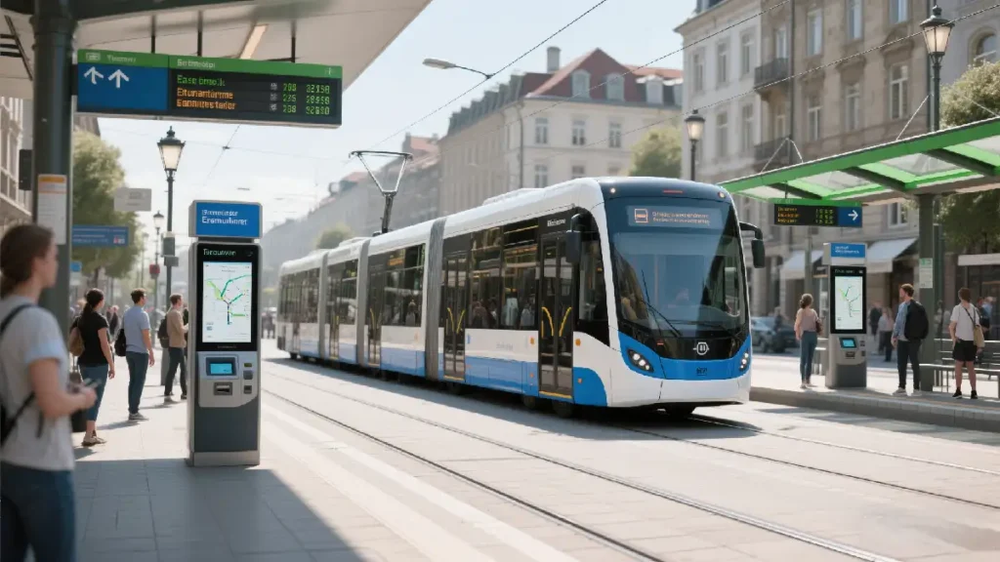
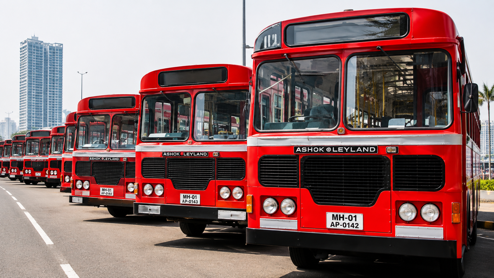
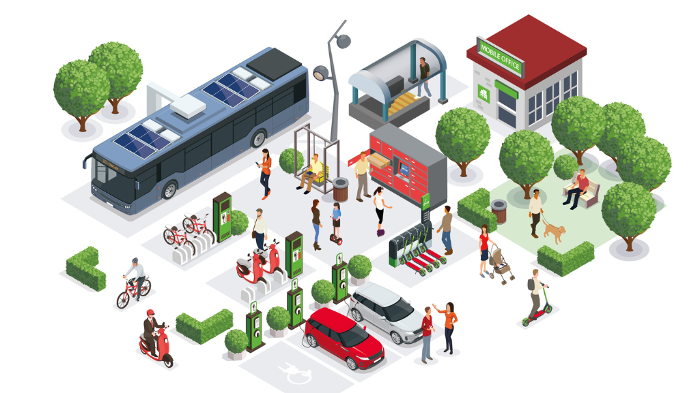

SmartTransit OS
Next-Generation AI-Powered Smart City Public Transport Operating System. Engineered for real-time fleet telemetry tracking, intelligent occupancy forecasting, automated incident dispatch, and multi-role commuter management.
Interactive System Architecture
Hover over any architectural layer to inspect its connected components, services, and data flows.
Desktop Web Browsers, Mobile Viewports, Digital Bus Stop Displays, Driver In-Vehicle Tabs.
Fleet Roster Service, Route Service, Driver Assignment Service, Incident Multi-Channel Dispatcher.
Real-time ETA Predictor, Occupancy Crowding Forecaster, GPS Anomaly Detector, Adaptive Dispatch Rules.
Simulated GPS stream, WhatsApp (+91 7710893839) & Gmail (vsujal956@gmail.com) Multi-Channel Dispatch.
Municipal Bus Fleet Roster, Route Coordinates, Stop Geofences, RBAC Policy Matrix.
AuthContext, ThemeContext, PublicAccessibilityContext, Local Storage Persistence.
How SmartTransit OS Works
Step-by-step telemetry and AI decision loop from commuter request to operational resolution.
Commuter Search
Passenger queries route RT-108 on the Live Bus Map.
Telemetry Stream
Bus 245 streams live GPS coordinates and occupancy payload.
AI Inference
aiEngine calculates ETA (4 mins) and predicts 94.2% confidence.
Dispatch Alert
Chief Dispatch Officer evaluates crowding surge and dispatches feeder unit.
Multi-Channel Sync
Alert dispatches to WhatsApp (+91 7710893839) & Gmail (vsujal956@gmail.com).
Implementation Milestone Roster (ST-01 → ST-80)
Complete evolutionary trajectory of SmartTransit OS across 80 system milestones.
Core Shell & Navigation
AppShell layout, sidebar navigation, theme tokens, and routing structure.
RBAC Auth & Multi-Role Switching
RoleSwitcher dropdown, AuthContext demo login, and ProtectedRoute enforcement.
Passenger & Driver Dashboards
Live Bus Search, Journey Planner, Active Trip Card, and Driver Cockpit.
Admin Console & Fleet Roster
Fleet management, driver assignment modals, route management, and schedules.
SOC Command & Telemetry Engine
System Operations Center, GPS monitoring, infrastructure telemetry, and backups.
AI Predictive Engine & Analytics
AI Intelligence Center, occupancy forecasting, demand heatmaps, and delay simulation.
Multi-Channel SOS & Accessibility
WhatsApp (+91 7710893839) & Gmail (vsujal956@gmail.com) dispatch, Marathi localization.
Bundle Optimization & Documentation
Lazy route code-splitting, header overflow fix, UserAvatar, profile drawers, documentation portal.
Multi-Role Application Portals
Select a persona to inspect role-specific dashboards, navigation menus, and operational capabilities.
Transport Admin — Operational Control
Persona: Priya Nambiar (Chief Dispatch Officer)
- • Dispatch Command Overview (`/admin/dashboard`)
- • Municipal Fleet Management (`/admin/fleet`)
- • Driver Roster & Assignments (`/admin/drivers`)
- • Transit Routes & Timetables (`/admin/routes`)
- • Schedule Dispatcher (`/admin/schedules`)
- ✓ Reassign driver units to active buses
- ✓ Trigger fleet emergency advisories
- ✓ Monitor live crowding & demand heatmaps
- ✓ Export operational GTFS-RT logs
AI Predictive Intelligence Engine
Real-time inference pipeline powering predictive ETAs, crowding forecasts, and telemetry anomaly detection.
Live GPS & Occupancy
Processes vehicle speed, stop arrival times, and passenger count signals.
Spatial & Temporal Features
Extracts corridor congestion scores, signal delays, and historical dwell times.
Confidence Model (94.2%)
Generates ETA predictions and assigns confidence scores with latency <39ms.
Human-in-the-Loop
Recommends holding bus units or dispatching auxiliary feeder coaches.
Interactive Asset & Screenshot Gallery
Click any image card to open high-resolution fullscreen preview.



ST-80 Bundle Code-Splitting & Optimization
Exact empirical bundle size metrics before and after Vite React dynamic route code-splitting.
Single monolithic JavaScript bundle file containing all 80+ route page components.
Initial entry bundle size reduced by 47.7% with on-demand async page chunk loading.
Interactive RBAC Access Matrix
Role-Based Access Control matrix defining page access and operational permissions across all 4 personas.
| MODULE / PAGE ROUTE | PASSENGER | DRIVER | ADMIN | SYSTEM ADMIN (SOC) |
|---|---|---|---|---|
| Live Bus Map & Search (`/passenger/search`) | ✓ Allowed | ✓ Allowed | ✓ Allowed | ✓ Allowed |
| Driver Navigation Cockpit (`/driver/navigation`) | × Restricted | ✓ Allowed | ✓ Allowed | ✓ Allowed |
| Fleet & Driver Assignments (`/admin/fleet`) | × Restricted | × Restricted | ✓ Allowed | ✓ Allowed |
| SOC Telemetry & Infrastructure (`/soc/telemetry`) | × Restricted | × Restricted | × Restricted | ✓ Allowed |
Technology Constellation
Core technology stack powering SmartTransit OS front-end application and AI services.
$ npm run build > smarttransit-os@1.0.0 build > vite build ✓ 2127 modules transformed. dist/assets/index-OYgtvvHB.js 593.62 kB │ gzip: 156.70 kB ✓ built in 23.69s 0 errors, 0 warnings
Strategic Future Roadmap
Planned operational evolution for smart city expansion and IoT hardware integration.
Prototype Platform
Full multi-role frontend application with telemetry simulation engine.
Production Backend
Node.js microservices with PostgreSQL & PostGIS spatial database.
Hardware IoT Integration
Direct CAN-bus vehicle telemetry and passenger counting sensors.
Multi-City Deployment
Multi-tenant deployment across Mumbai, Pune, and Nagpur municipal fleets.